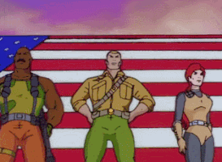

CURIOSIDADES
En la serie de los thundercats, el gato que acompaña a estos felinos cosmicos es conocido como snarf(nombre de la raza felina a la que pertenece). Pero en un episodio en el que encuentran otro felino de esta especie se sabe que su verdadero nombre es "Osbert".
El nombre de uno de los personajes principales, “ Optimus Prime”, significa “el primero y el más grande”, como corresponde a un verdadero líder. Por su parte, de los “Megatrones” se dice que tienen relación con la industria militar y el armamento nuclear.
Un dato curioso y poco conocido de la serie He-man y los Amos del Universo es que el archivillano Skeletor es tío del protagonista. Skeletor fue arrastrado al mundo de las tinieblas por Hordak y allí comenzó a practicar magia negra para apropiarse de los secretos del Castillo de Grayskull.
¿QUE ES RETROSERIES?
Retroseries es una pagina web que se dedica a mostrar series animadas antiguas, en especial de accion, las cuales han sido tan exitosas que fueron inspiracion para que se hicieran peliculas y series renovadas. Tambien buscamos tu apoyo para poder expandirnos mas y traer series que no solo sean de accion.Disfruta de nuestro contenido y siguenos en nuetsras redes sociales, sin mas que agregar disfruta de retroseries!.
EN RETROSERIES PUEDES ENCONTRAR CONTENIDO DE:
Thundercats
(estilizado como ThunderCats, conocida en España e Hispanoamérica como ThunderCats: Los felinos cósmicos) es una serie animada estadounidense de televisión que fue producida por Rankin/Bass Productions, misma que creó a los Halcones Galácticos, Los Tigres del Mar, esta última fue creada como parte de la serie de libros de historietas. Fue estrenada el 23 de enero de 1985 y está basada en los personajes creados por Theodore Walter «Tobin» Wolf; dirigida por el japonés Katsuhito Akiyama. El escritor fue Leonard Starr. La serie sigue las aventuras de un grupo de felinos humanoides extraterrestres.
The Transformers
Fue una caricatura norteamericana emitida entre 1984 y 1987. Cautivando la imaginación de los niños de la época, fue esta serie la que inspiro, mas que cualquiera otra ficción, las cientos de historias que han tenido lugar dentro de las muchas iteraciones del universo Transformers durante los últimos 35 años.
He-Man and The Masters of The Universe
Conocida como He-Man y los Amos del Universo en español, es una serie de televisión animada estadounidense producida por Filmation basado en línea de juguetes de Mattel Masters of The Universe. La serie fue estrenada en 1983 y finalizó en 1985, constando de dos temporadas de 65 episodios cada una. Además estaba destinada al público masculino de entre 3 y 10 años de edad; sin embargo, su popularidad llegó a conquistar también al público femenino y a personas de todas las edades, como jóvenes y adultos en determinadas edades. Su éxito como serie de televisión se mantuvo activo todavía a finales de los 80 y principios de los 90, junto con su serie hermana de She-Ra la Princesa del Poder.
